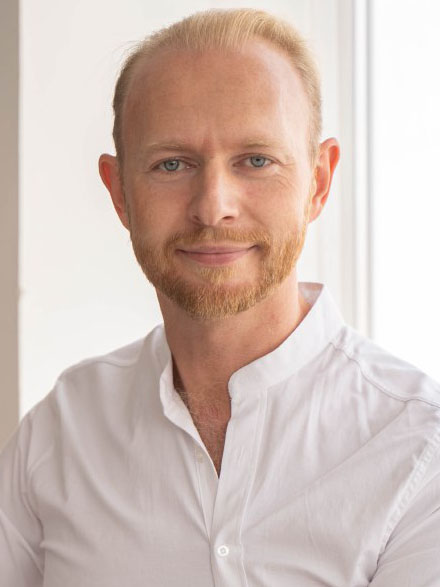

|  |
Parashchuk Valentyn CV |
Post:
Specialty: OBGY, Fertility specialist, Laparo- and hysteroscopic surgeon, Ultrasound in gynecology
Academic degree: PhD
E-mail: parashchuk@gc-ivf.com
+380505661084
Parashchuk Valentyn Yuriyovych, was born on December 16, 1982 in the Kharkiv city
In 1989 I went to high school №1, where I studied until 1996.
From 1996 to 1999 studied in high school №61.
From 1999-2005 studied at Kharkiv State Medical University, graduating with honors.
From 1.VIII.2005-2008 passed residentship in the surgical department of the Kharkiv Regional Clinical Hospital.
From 2005 to 2008 studied for a master's degree at the Department of Faculty Surgery, got my Master's degree with a thesis on "Features of surgical tactics in women with diseases of the vena cava inferior in combination with the pathology of the pelvic organs". From 1.VII.2008-30.XI.2008 I took specialization courses in "Obstetrics and Gynecology".
From 1.XI.2008-14.IV.2011 I studied in Postgraduate Course (graduate school) at the Department of Obstetrics and Gynecology №2 at Kharkiv National Medical University (KhNMU). I got my PhD degree thesis on "Prediction and prevention of thromboembolic complications in patients with uterine leiomyoma".
I took part in development of methodical materials for students and doctors-residents.
I have 56 scientific publications, 14 articles published in medical journals, including 3 in English (2 of them in journals included in the scientific-metric database Scopus) and 38 abstracts in congresses and conferences, 3 patents. I participated in the creation of methodological guidelines and tutorials. Over the years of the scientific and pedagogical activity wrote 10 educational and methodical works have been published, which are used in pedagogical practice. I’m a co-author of 2 textbooks for students of higher education institution 4th level of accreditation, including one with the stamp of the Ministry of Education and Science of Ukraine.
Passed an internship abroad (1. Clinical Observation Program. Brussels (Belgium). 2013 June 27-28; 2.Clinical Observation Program. Skive (Denmark). 2016 July 22-25; 3.Clinical Observation Program. Ahrensburg (Germany). 2017 May 18-21), regularly participated in international scientific symposia, since 2012 been a full member of the European Association of Reproductologists and Embryologists (ESHRE). I’m also a member of the Ukrainian Association of Reproductive Medicine (UARM) and a member of the Association of Obstetricians and Gynecologists of Ukraine.
In 2013 I received a certificate as a specialist in ultrasound diagnostics and endoscopy.
Since 2012 I have been working as an obstetrician-gynecologist and fertility specialist at the Clinic of Reproductive Medicine named after Academician VI Gryshchenko and since 2017 as a Head Doctor. Gryshchenko Clinic is the clinical base of the Department of Obstetrics and Gynecology №1 KhNMU.
Since 2018 I have been working as an associate professor in the Department of Obstetrics and Gynecology №2 KhNMU.
Thank you!